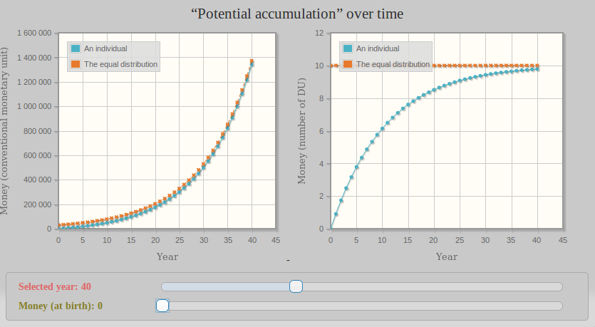
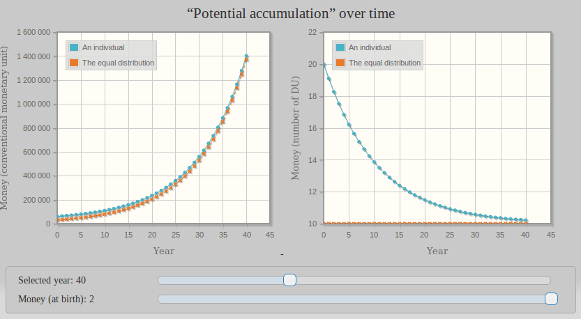

Use Space or arrows to explore the presentation (Thx to Attilax for translation, original version here)
How did I fell into Libre Currency?
and Biocoop communication (January 2008)
The consum’action or responsible consumption is a neologism which expresses the idea of voting with your shoping trolley, choosing who you give your money to, choosing as a citizen and not anymore as a simple consumer.
November 2008,
I discover Paul Grignon’s movie
Money as Dept
which brings back to life this child’s question:
this coins and bills are existing,
for the benefits of their creators,
not for the other’s.
How can we accept such an injustice?
It's an association defending rights
and freedom of all the web citizens
Filters of the network (such as illustrated by la Quadrature du Net)
⇒ beginning of my militancy! (February 2009)
Friday the 13th of may 2011,
In a pirates forum, they are talking about a movie called The Basic Income
The Universal Basic Income is an inalienable and unconditionnal right. You can cumulate it with other incomes, it’s distributed by a political community to all its members from birth to death, without ressources control or counterpart. The amount and the way to finance it are adjusted democratically.
Definition of UBI such as given by
the Mouvement Français pour un Revenu de Base (MFRB)
UBI appeared to me as a solution to the basic injustice, which is the way all currencies are created
⇓
The problem of financing the UBI is a fake problem!
We must re-think money and currency,
But how?
If the consum'actor pretends to vote with “his shopping trolley”
Some people must have already thought of that!
4th of July 2011,
On the same pirates forum,
they talk about Relative Theory of Money
A guy called Stéphane Laborde claims to have found a monetary approach of the UBI.
But the theory is hard to understand
and the guy seems a bit whimsical
Forget about it for now ...
I stumbled on the work of the self-taught Silvio Gesell (1862 - 1930)
about a rusting money
Only money that goes out of date like a newspaper, rots like potatoes, rusts like iron, evaporates like ether, is capable of standing the test as an instrument for the exchange of potatoes, newspapers, iron and ether.
Extract from The Natural Economic Order
The Alberta Prosperity Certificates
are an example of rusting money
“This coupon can only be used if regularly stamped”
With rusting money,
monetary units had the peremption date
I was looking for, but ...
it seems heavy to use, and not very elegant
⇓
July 2012, after many hesitations,
I finally start to study the Relative Theory of Money
Stephane Laborde’s solution is much more elegant than Silvio Gesel’s
After years spent to organize their new life,
some castaways decide to create their own currency ...
It only requires to:
Problem:
Solution :
New monetary units must be created regularly,
every year for example
But how many every year?
If the same amount of units is created every year
(for example 10 units) then it’s unfair:
Year after year,
this amount will become smaller and smaller
compared to the total of already existing units
Like a piece of confetti laid on an expanding balloon
- The RTM for the kids
Instead, we should create every year the same proportion
(for example 10 %) of the total

Like a piece of confetti drawn on an expanding balloon
- The RTM for the kids
M/N is then the number of units that would get
every castaway if they were equally distributed
I have 10 units
A number of units doesn't tell us anything.
We must compare it to a referential
that has a meaning for all castaways.
⇓
We just need to compare it to average repartition M/N.
I have 10 units while average is 10.
I’m to the average!
Every year, a same proportion M/N is created
for every castaway
(let’s say 10 % for now)
-
This 10 % growing rate per year is called c,
these new units are called “Universal Dividend”
UD = c × M/N
To ease the studies,
we place ourselves in this situation:
The accounts don’t evolve from one year to the next,
which doesn't mean there are no exchanges
- Boxing Universal Basic Income
Don’t forget:
the number of units doesn’t mean anything,
it’s relative part of average M/N that matters
Which implies to compare this number
to the last created UD since by definition:
UD = c × M/N
-
We can then count in UD
like we could count in “minimum wage”
This football player earns 1000 times the minimum wages
When we count in numbers of UD,
what becomes of M/N?
By definition: UD = c × M/N
⇒ The average M/N is constant and is 1/c
(if c is 10 % a year, then M/N is 10)
When we count in numbers of UD, what becomes of M?
By definition: DU = c × M/N
So M = N/c
Said differently:
if population N is stable,
money supply M is stable!
If we draw the evolution of someone’s account entering the system, we can see it tends towards the average M/N

Account having no monetary units at birth
- The RTM in color
Same thing for someone’s account entering the system with more than average M/N

Account with twice more units than average M/N at birth
- The RTM in color
Let’s imagine a guy who owns all monetary units
After 40 years of created UD,
this guy’s part will only be 2,5 % of the money supply
Dilution time illustration
- The RTM in color
Basic income is an inalienable, unconditional right, cumulative with other income, distributed by a political community to all its members, from birth to death, on an individual basis, without control of resources or counterpart requirement, of which the amount and funding mechanism are adjusted democratically.
Definition of the Universal Basic Income such as given by
the Mouvement Français pour un Revenu de Base (MFRB)
This UBI / UD equivalence has been mathematically demonstrated by Stéphane Laborde
Illustration of the UBI / UD equivalence
- Boxing Universal Basic Income
UBI doesn’t question the monetary code,
so it’s more difficult to refute the words:
"financing"
"'cancer*' of welfare dependency"
"taxes despoliation"
While these words are just crazy!
* cancer is more like the poorly made currencies which perverts
even the purest hearts and leads to more devastation and violence.
An assymetric monetary system is unstable
and will collapse
Many patches are added to make it last
as long as possible
⇓
Many see the UBI as one more patch
UBI? The spare wheel of capitalism!
Different paths have been explored,
all based on the human life expectancy
Let’s see one of them ...
First, an incoming member must have created
his share of money after half of his life
Amount of money created after half a life
- The RTM in color
Second, the monetary units which existed half a life earlier must have melt and been diluted into the new units created since then.
Dilution time illustration
- The RTM in color
The previous graphics can be summarised
in a board with 4 different values for c
Different rates recap - The RTM for the kids
Thanks to all these calculations and simulations,
a growing rate of 10 % a year
seems to be a good compromise
Work of Stéphane Laborde (a telecom engineer)
published in 2010
where the theory of a “relative currency” is set
* finally a fierce opponent to fractional-reserve banking in 100% Money
** besides that, he was a promoter of the UBI with his negative income tax
Relative currency has other names:
- symetrical currency
- neutral currency
in reference to the Net Neutrality
- and mostly libre currency!
in reference to Libre Software
Internet is offering much stronger levers!
Duniter is a software
for cryptocurrency
It’s made out of libre softwares,
and it allows us to create libre currency
Among all the cryptocurrencies with UBI included, Duniter has a priori (in august 2018):
Some are classic:
A Web Of Trust* is used
to identify the money co-creators
It’s necessary to make sure everyone is producing only one UD for each interval of time
* We’ll see about this Web of Trust in details later
The Web of Trust also allows:
⇒ Nodes with different computing power have the same chance to write blocks!
Bigcon is fucking up the planet:
Wrong with Duniter
Wrong with Duniter
Those who are operating bigcon nodes are called miners
Some are investing in many bigcon nodes to maximize their chance to win the combinatory challenges
A bigcon farm - Inner Mongolia - China
With Duniter, a nano computer is enough to win regularly the combinatory challenge
The 8 of march 2017
on International Women's Day
The first libre currency comes to birth
propelled by Duniter
Codename: Ğ1
pronounced “The June”
Formula* for calculating Universal Dividend:
UD(t+1) = UD(t) + c² × (M/N)(t)
Bi-annual re-evaluation, but daily emission**
* equivalent to the classic formula UD = c × M/N when N is stable,
but with a better behavior when variation is strong
** more precisely:
To be a member,
you have to be certified by other members
Certification emission by one member has some constraints:
Let’s define distance between members ...
If Paul certified Jack
⇒ Jack is 1 away from Paul;
else if Paul certifed someone
who certified Jack
⇒ Jack is 2 away from Paul;
etc.
If there is no connexion between Paul and Jack
⇒ infinite distance!
Maximal distance between a new member and the referent members is 5.
Netherless, this rule is not strictly applied,
You have to reach a minimum percentage of referent members to respect distance rules: 80 %.
But what is a referent member?
A referent member
has received and emitted at least Y certifications
Y increases as a function of the fifth root of N,
N being the total amount of members
For example :
if N is 1 000, Y is 4
if N is 10 000, Y is 7
if N is 100 000, Y is 10
if N is 1 000 000, Y is 16
To have a web which can grow easily
and dissuade the cheaters in the same time
What’s the point of having a database as Duniter
if there’s no client applications to exploit it!
Let’s see what already exists...
First client developped for Duniter,
it allows:
Thick client developped with PyQt5 and Python3
Other client for Duniter,
with the most advanced user interface functionalities,
It gives for example:
Web client developped with ionic.js
Command-line client,
ideal to planify recurrent transactions.
Examples :
Client developped with Python 3
Market Place (realised with ionic.js)
Donations service to finance block calculators
Made as a Duniter node plugin
Graphical tool to explore Web of Trust
(uses Cesium profile data)
There are events happening everywhere in France,
“aperos”, Ğ-markets, Ğéconomicus games…
Find them on the web
Libre currency
is being built by all
and for all
{kind=link}
{kind=link}
{kind=link}
{kind=link}
{kind=link}
{kind=link}
{kind=link}
{kind=link}
{kind=link}
{kind=link}
{kind=link}
{kind=link}
{kind=link}